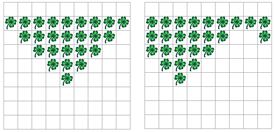
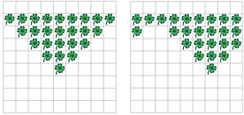

 
Schreiben Sie ein Programm, das die Welt um eine vom Benutzer eingegebene Anzahl Spalten nach links verschiebt, und ein Programm, das die Welt um eine vom Benutzer eingegebene Anzahl Spalten nach rechts verschiebt.
Die Welt soll dabei "rundherum" verschoben werden: Spalten, die links bzw. rechts "rausfallen" würden, sollen auf der gegenüberliegenden Seite wieder erscheinen, wie in der Abbildung oben dargestellt.
Ein paar Hinweise für die Lösung:
Sie können mit der Klasse tools einfach Benutzereingaben
erfragen. Beispiel:
int verschiebenUm = tools.intInput("Um wieviel
verschieben?");
Erstellen Sie einen Array mit der berechneten verschobenen
Zeile. Den Array können Sie wie folgt initialisieren: boolean[]
neueZeile = new boolean[world.getSizeX()]; Um das zu üben, kopieren
Sie zunächst einfach eine Zeile in neueZeile rein, und ersetzen dann
eine andere Zeile durch die Werte in neueZeile (also noch ohne
Verschieben). So sind Sie sicher, dass das Schreiben und Lesen der
Welt und des neu erstellten Arrays funktioniert.
Soll die Welt zum Beispiel um 4 Felder nach links verschoben werden, so würde das neue Feld mit x=0 mit dem Inhalt von Feld x=4 ersetzt, das neue Feld x=1 mit dem Inhalt von Feld x=5, ... das neue Feld x=6 mit dem Inhalt von Feld x=10 – aber es gibt keine Spalte x=10 in der Standardwelt von Kara, die nur neun Spalten breit ist. Da "rundherum" kopiert werden soll, soll das neue Feld x=6 mit dem Inhalt von Feld x=0 ersetzt werden, das neue Feld x=1 mit dem Inhalt von Feld mit x=1, ...
Eine elegante Methode, um nach diesem Schema die Spalten X zu
berechnen, von denen her kopiert werden soll, ist den Rest der
Ganzzahldivision durch die Anzahl Spalten: int
kopiereVonX = (x + verschiebenUm) % world.getSizeX(); Solange
x+verschiebeUm < world.getSizeX(), beträgt der Rest immer (x +
verschiebenUm) (weil die Ganzzahldivision als Resultat 0 liefert).
Sobald x+verschiebeUm >= world.getSizeX(), fängt der Rest wieder
bei 0 an zu zählen – damit schliesst sich sozusagen der Kreis.
Natürlich können Sie diese Berechnung auch durch entsprechende Fallunterscheidungen (if) ersetzen!
Ersetzen Sie für die aktuelle Zeile alle Felder mit den Werten aus dem Array neueZeile.
Testen Sie Ihr Programm an Welten verschiedener Grössen (gerade und ungerade Anzahl Spalten bzw. Zeilen).